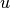
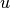

The Perfect Crystal and the Simulation Cell¶
The Perfect Crystal¶
Inorganic materials are typically crystalline, meaning that they are periodic at the atomic scale. A crystal consists of atoms arranged in a pattern that repeats periodically in three dimensions. In this defiinition, the pattern can consist of a single atom, a group of atoms, a molecule or group of molecules. As a solid forms, atoms and/or molecules asume fixed orientations and positions with respect to each other. As a necessary consequence of particle growth, atoms and molecules position themselves as to minimize the forces acting upon it. Each molecule entering the solid phase is influenced in almost exactly the same way as the proceeding molecule, and the solid particle consists of three-dimensional ordered arrray of molecules; that is a crystal.
A crystal is a periodic array of atoms and consists of a set of lattice vectors which all of Euclidean space and an atomic basis, which when combined form a unit cell. For computational materials, it is convenience to represent crystals as a material with infinite extent, but with a finite representation for computational tractibility. The coordinate system in which to represent an infinite solid.
See books by
[San69] Donald Sands. Introduction to Crystallography. This book is currently published by Dover publications and is a rather cheap book on the subject.
[San02]. Donald Sands. Vectors and Tensors in Crystallography. This is a much more mathematical treatment of crystallography.
[HH01] Christopher Hammond. Basics of Crystallography
[Gia02] Giacovazzo and Monaco. Fundamentals of Crystallography
A Graphical Explanation of a Lattice¶
We will replace the traditional terminology of the unit cell with a mathematical description which is more suitable for computational materials. The notation for computational materials isn’t standardized, but the terminology selected here is consistent with computational materials research, and the exposition here is one for practical notation and amenable for the application of applied mathematics and understanding computational underpinings.
In conventional notation, the lattice vectors are often referred to as , , and , and are often conveniently described with the length of the lattice vectors,  ,
,  , and
, and  , to represent the length of the vectors , , and , respectively. The angles
, to represent the length of the vectors , , and , respectively. The angles  ,
,  , and
, and  are used to describe the angles between the lattice vectors.
are used to describe the angles between the lattice vectors.
A Mathematical Explanation of a Lattice¶
Computationally, these are an inelegant representation of a crystal lattice and use the following notation instead. These lattice vectors are denoted  ,
,  , and
, and  . These vectors are often denoted as the row vectors , but are often more useful in matrix operations as column vectors. Whether or not the lattice vectors should be used as a column or row vector, should be obvious by the application.
. These vectors are often denoted as the row vectors , but are often more useful in matrix operations as column vectors. Whether or not the lattice vectors should be used as a column or row vector, should be obvious by the application.
In computational materials, these lattice vectors are often represented as the matrix , where
Cartesian Coordinate System and Direct Lattice Coordinates¶
There are two types of representation of the basis of atoms in computational material system. One represents the basis of atoms in the unit cell using the standard unit vectors in Eucliean space, which is commonly known as the Cartesian coordinate sytem. The second in the representation of the lattice vectors of the atom.
Given the representation of as a matrix containing the lattice vectors, then the transpose of that matrix is . The transformation of the direct coordinates to cartesian coordinates is
where  ,
,  , and
, and  are elements of a point in a Cartesian coordinate system and ,
are elements of a point in a Cartesian coordinate system and ,  , and are elements of the same points defined by the edge vectors of the lattice.
, and are elements of the same points defined by the edge vectors of the lattice.
The transformation from the Cartesian coordinate system to the direct lattice is
The Simulation Cell¶
The simulation cell consists of the lattice vectors and a basis of atoms in that lattice vector. Atoms of different species must be identified. From a notational perspective, differentiation of the chemical species uses small Greek subscripts to identify different species as a general terminology (e.g. or the chemical symbols for specificity (e.g. ).
The atomic basis consists of the atoms which are contained within the volume bounded by the lattice vectors. From a programatic implementation, these basis atoms are implemented as an Atom class which as the properties: symbol, position, index, and variety of specific properties (such as magnetic moment).
Lattice Vectors and Periodic Boundary Conditions¶
In order to motivate the idea of an infinite solid mathematically, let us start with a function which is periodic in one dimension. A function  is periodic with period
is periodic with period  if
if
where the periodic function can be defined as a function whose graph exhibits translational symmetry. The most ubiqitious of these function are the trigonmetric series which are integral to calculating and modelling solid matter. The sine function is periodic
This concept of periodicity is also referred to as translational invariance. The set of points due to translational symmetry from the infinite discrete set
In three-dimensions, translational symmetry are in the direction of lattice vectors. If periodic boundary conditions are applied in three directions, the three lattice vectors must span all of Euclidean 3D space.
We then motivate the discussion through molecular dynamics and the strength in molecular dynamics in solving dynamical systems by sampling of the Boltzmann distribution through a variety of thermodynamic ensembles by looking at the Carr-Parrinello method. Due to the computational cost of a DFT calculation between the updates in the Carr-Parrinello method, the need for empirical interatomic potentials becomes motivated. We discuss different classes of interatomic potentials.
Additional References¶
References¶
- Gia02
Carmelo Giacovazzo. Fundamentals of crystallography. Volume 7. Oxford university press, USA, 2002.
- HH01
Christopher Hammond and Christopher Hammond. Basics of crystallography and diffraction. Volume 214. Oxford, 2001.
- San69
Donald E Sands. Introduction to crystallography. Courier Corporation, 1969.
- San02
Donald E Sands. Vectors and tensors in crystallography. Courier Corporation, 2002.